Before the marketing career, my byline ran in newspapers. A selection of clippings from the print days at the New York Daily News, the Newark Star-Ledger, and the Chicago Tribune. Tap any clip to read it.
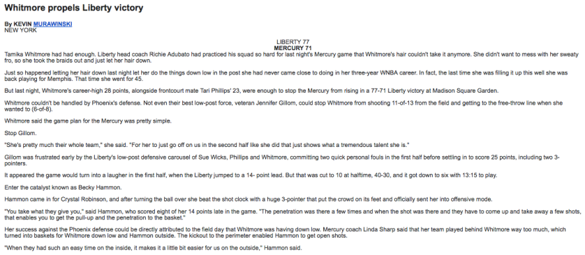
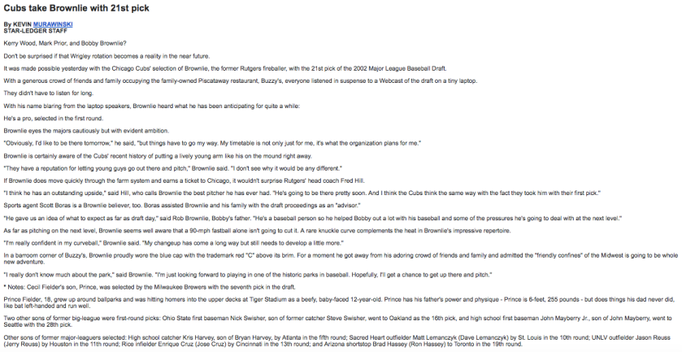
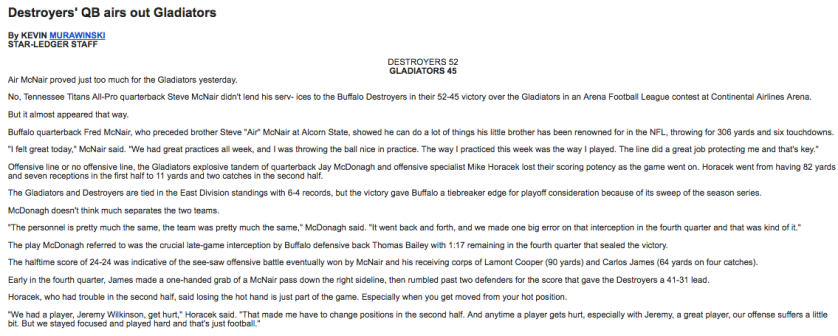
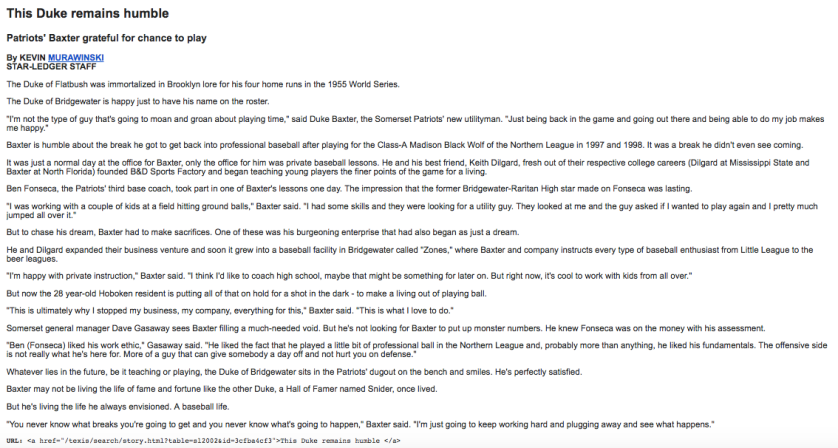
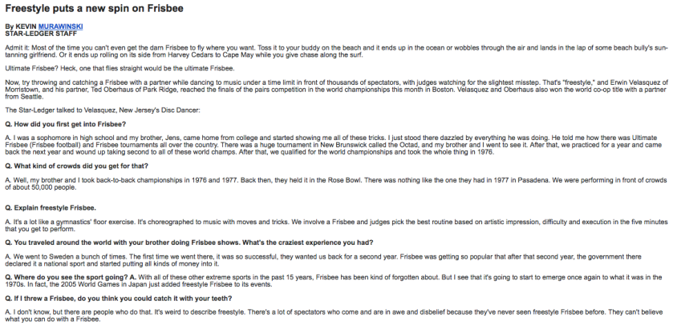
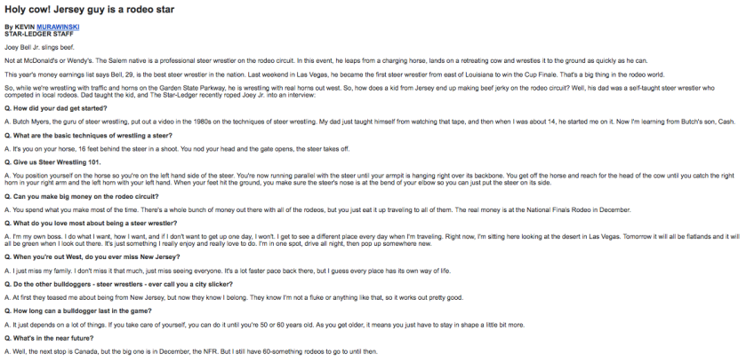
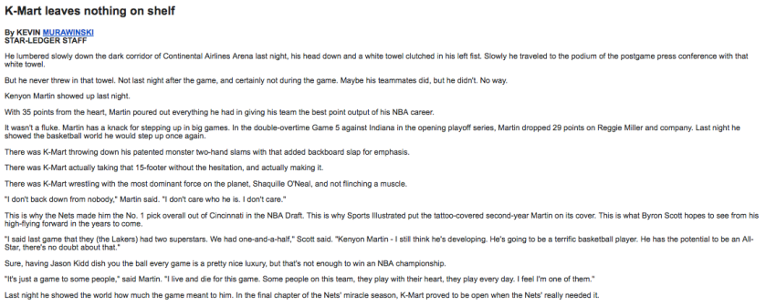
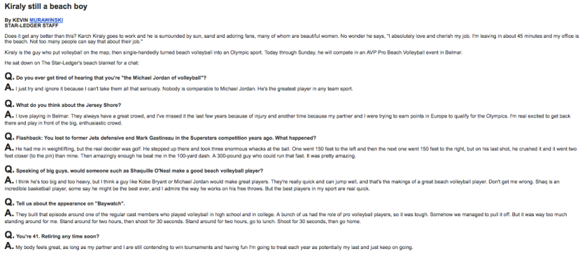
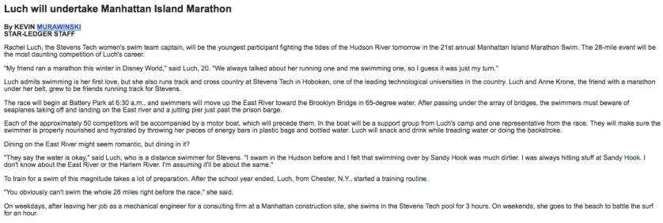
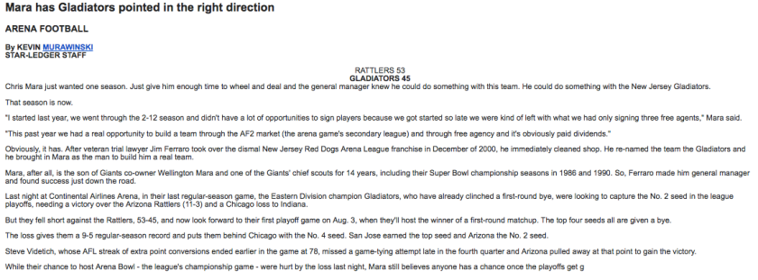
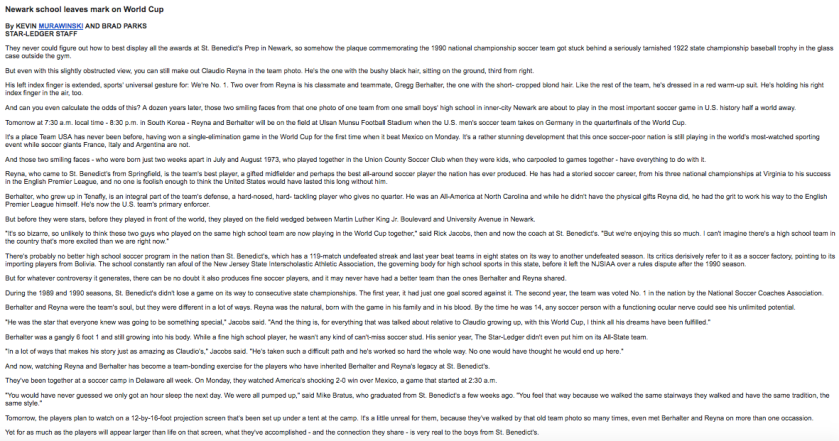
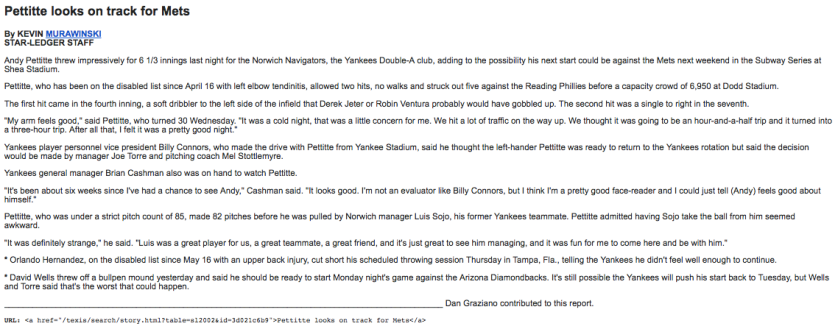
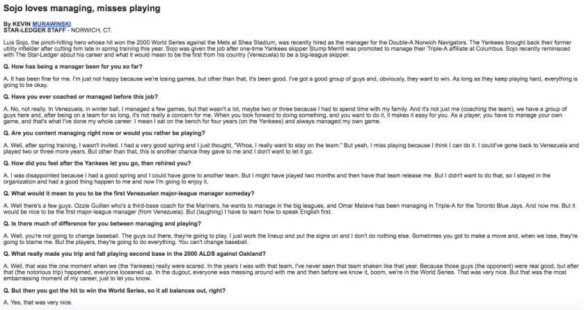
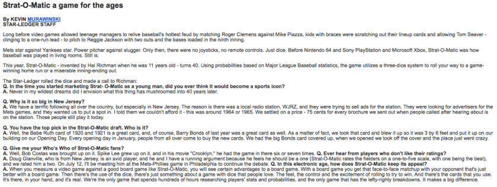
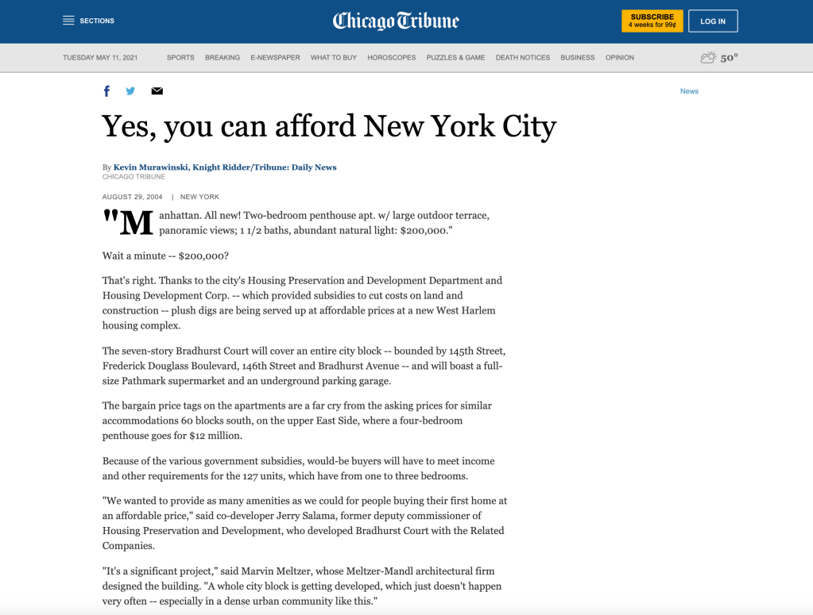